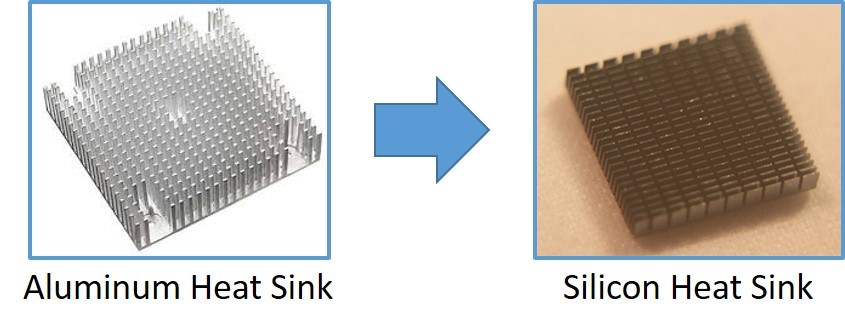

Expanding the Future of Silicon
Silicon plays a critical role in today’s electronic industry
with its primary use in the IC and Solar industry. In last half
century Silicon has revolutionized the technology industry, first by
replacing vacuum tubes with solid-state transistors and then
integrated circuits, whose size, complexity and performance has
improved exponentially. However, modern thermal management of compact
electronic or photonic devices still relies mainly on metal
heat-sinks, heat-spreaders or ceramics to remove waste heat. Metal or
ceramic heat-sinks or heat-spreaders can provide adequate performance
given significant space and weight allowances. However, Silicon, as a
bulk material, can provide improved performance and add value in
solving modern thermal management issues.

As the Silicon transistor replaced the vacuum tube after the invention
of the transistor in 1947, metal heat-sinks will be replaced by
superior materials in the near future due to better thermal
performance, mass-production, compact size and light weight. Silicon
is one such material and will cause a paradigm-shift in modern thermal
management.
Silicon Facts
| Density |
2.3290 g/cm3 |
| Melting temperature |
>1414 °C |
| Molar heat capacity |
19.8 Joule/(mol*K) |
| Thermal conductivity |
149 W/(m*K) |
| Thermal expansion |
2.6 μm/(m*K) at 25 °C |
| Young's modulus |
130 to 188 GPa |
| Shear modulus |
51 to 80 GPa |
| Mohs hardness |
7 |
Silicon Comparison to Common Thermal Management Materials
|
| Density [g/cm3] |
2.33 |
2.70 |
8.96 |
3.8 (white) |
3.25 |
| Thermal conductivity [W/(m*K)] |
149 |
237 |
401 |
~ 35 |
83 to 170 |
| Thermal expansion [mm/9m*K] |
2.6 |
23.1 |
16.5 |
8.4 |
4.6 to 5.7 |
| Mohs hardness |
7 |
2.75 |
3.0 |
9 |
5 |
| Surface finish [μm] |
<0.1 |
>2 |
>2 |
>10 |
>1 |
| Bulk production |
Wet etching |
Forging, stamping |
Forging, stamping |
Stamping |
Stamping |
Silicon Thermal Package Advantages
- High Thermal Conductivity (> Aluminum Alloy)
- Non-electrical Conduction
-
Mass Production (> Million Piece per Lot, Low Cost Chemical
Etching)
- Small Feature Size (10 μm Size or Below)
- 3D Structure Fabrication
- Precision Part Tolerance (Below 2μm)
- Good Surface Finish for Better Thermal Contact
- Direct IC Layout on Silicon Substrate
- Matched Coefficient of Expansion (ICs)